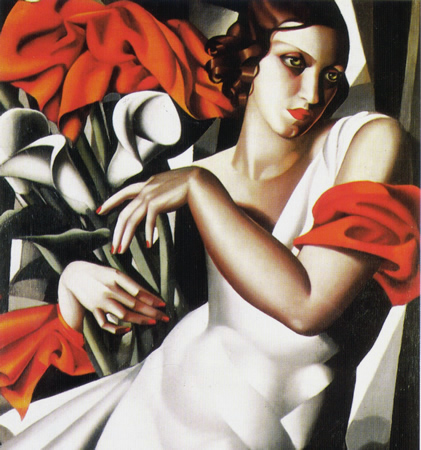
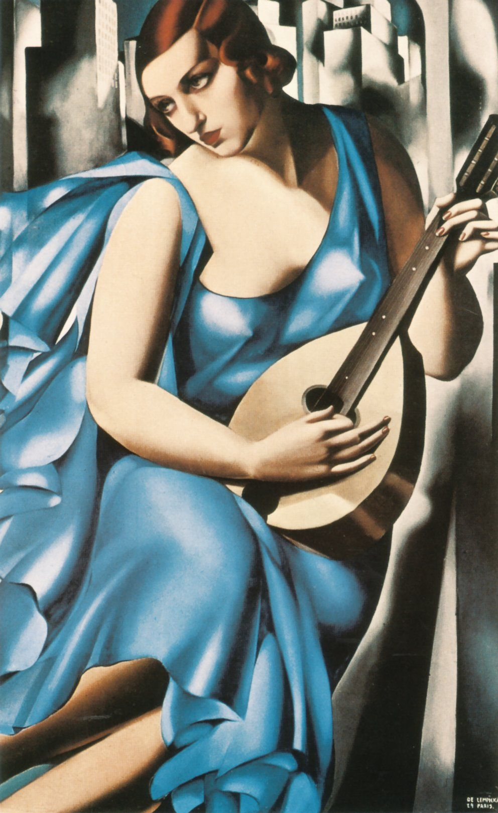
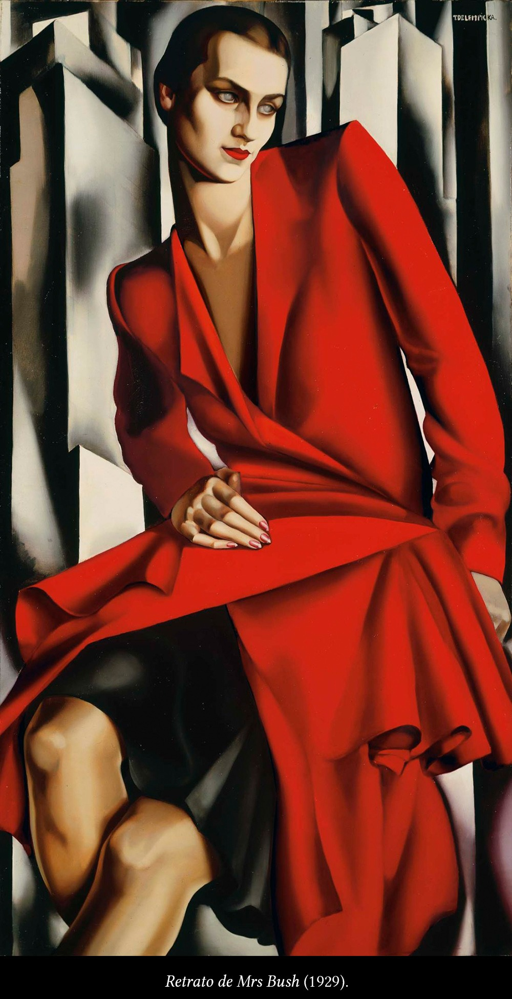

TAMARA DE LEMPICKA
Biografia
Tamara de Lempicka, también conocida como Tamara Lempicka, nacida Maria Gurwik-Górska (Varsovia, 16 de mayo de
1898 – Cuernavaca, 18 de marzo de 1980), fue una pintora polaca que alcanzó la fama en Europa, sobre todo en Francia y
Estados Unidos con sus retratos y desnudos de gusto art déco.Nació en un ambiente de lujos y abundancia.
Fue educada en un entorno femenino por su abuela, su madre y su tía. Viajó, tomó lecciones de arte, aprendió idiomas y
buenos modales. En 1918, se casó con Tadeusz Łempicki, con quien se mudó a París, y allí continuó sus estudios de pintura.
Desde sus primeras obras, Lempicka buscó representar la figura humana. Al respecto comentó Germain Bazin: "Un cuadro de
Tamara se representa en general como un bajorrelieve de una sola figura de volúmenes poderosos que llena todo el campo del
lienzo, hasta el punto en que, a menudo, el cima de la cabeza está cortado por el borde superior".2
Durante los años veinte, Lempicka asistió a clases con Maurice Denis en la Académie Ranson y posteriormente fue discípula
del artista francés André Lhote en la Académie de la Grande Chaumière.Influenciada por el cubismo, Lempicka es considerada
una de las mayores representantes del estilo art déco en dos continentes. Fue la artista favorita de muchas estrellas de
Hollywood y se la denominó "la baronesa con pincel".Fue la retratista más reconocida de su generación entre las altas
esferas sociales. A través de su red de amistades, fue capaz de exponer sus pinturas en los salones de mayor élite del
momento.
Algunos de sus cuadros
|
 |
 |
|
 |
KAREN NATALIA VILLANUEVA SALINAS |
|